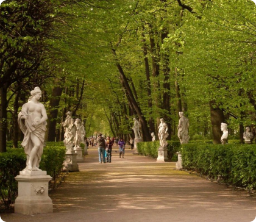
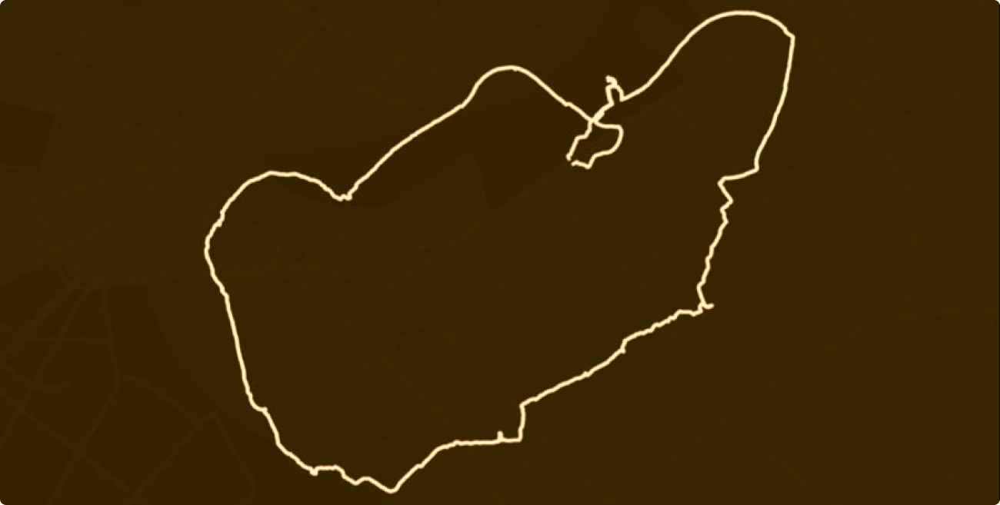
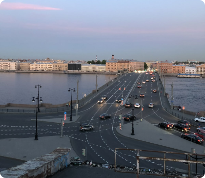
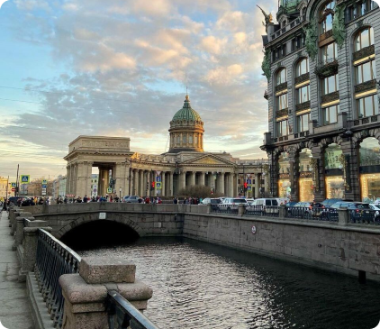

Лучшие маршруты


Создать свой маршрут


Мосты Северной Венеции
Идеальный маршрут для бега с живописными видами и естественными интервалами
— подъёмы на мосты меняют нагрузку, а с их вершин открываются панорамы
города.
Дистанция: 10 км
Сложность: Повышенная, есть лестницы и подъёмы.

Летний сад
Классическая пробежка по ровным аллеям, наполненными историей. Бег среди
мраморных статуй и вековых деревьев.
Дистанция: 3,5 км
Сложность: Легко
Griboedov: от Спаса до фонтана
Динамичный и зрелищный бег вдоль извилистого канала, где на каждом повороте
открывается новый архитектурный вид — от соборов до знаменитых мостиков.
Дистанция: 7 км
Сложность: Средняя, есть оживлённые переходы.
О проекте
История
Сообщество
О проекте
Блог
Маршруты
Клубы